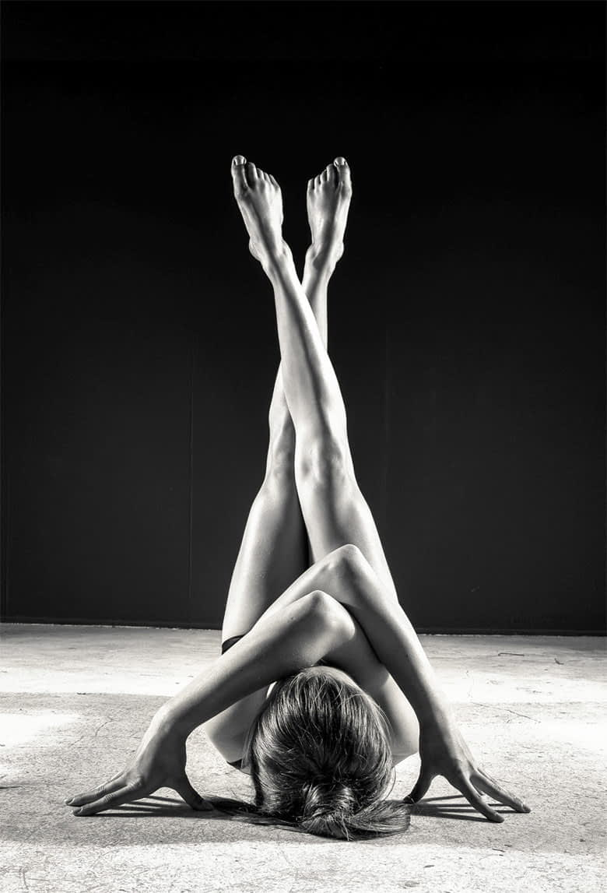
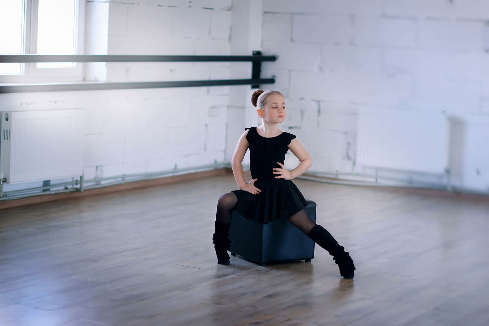

-
Some Facts About Ballet
Ballet is taught as a practice comprised of "positions" and traditional steps set to music, which almost anyone can start out learning to do and marks the beginning of body awareness, muscular control, and powerful, poised, physical deportment. The training programs will almost certainly transform the way of standing and holding the body, as dancers will be taught to keep the head up high, to properly position the spine and hips, to put the correct amount of weight on the feet, to improve balance, coordination and flexibility, and to move in a light and fluid manner.
Ballet is both a challenging and fulfilling body discipline that develops coordination and mental acuity as well as an ear for music and the joy inherent in responding physically to it. From an exercise standpoint, ballet is beneficial at any age and is a safe form of exercise, whose many benefits include muscular strengthening, the building of cardiovascular stamina, and the potential to increase flexibility. An absolute benefit includes postural awareness, postural alignment and general physical improvement. Because of the isometric techniques employed across ballet study, students of all ages build elongated yet strong arms and legs and the use of the weight of the body against gravity also strengthens lean muscle tissue.
Regarding emotional and cognitive benefits, it has been proven that the study of ballet mentors students to develop skills of determination and agility, and helps to build self-confidence. Ballet also enhances grace, and the discipline of its movements and practice promotes the tendency towards excellent organizational skills, develops impressive concentration levels, superior understanding of commitment, artistry and creativity, the propensity for self-expression, exceptional physical fitness, and the noticeable development of cooperation and awareness of other skills.
Studying ballet additionally challenges the mind in that it enhances memorization capacity, sequencing skills and sense of self in space – spatial and kinesthetic awareness– thanks to the application of stringing steps together, turning and level changing, reversing and retrograding, all of which can greatly improve dyslexia as well.
The Value of Ballet to all Types of Dancers
The dance world today is comprised of many dance styles, but whether you study hip-hop, contemporary or jazz, there is always something you can learn from a ballet class to incorporate into your other techniques. Considered the most demanding and disciplined of all dance forms, ballet provides the foundation for all other dance styles. With a solid ballet foundation, ballet-trained dancers can transfer their skills into jazz, modern dance, or any other style they might decide to pursue. Even in the case of some dance styles that demand a more released technique, such as hip-hop, knowing the opposing technique will enhance the movement quality and create a more versatile dancer. That is why the international trend nowadays is to encourage dancers to incorporate ballet lessons as part of their dance curriculum so as to increase their ability to perform in all dance genres.
Below are some of the many values that ballet delivers to dancers of any style:
- Develops strength and flexibility through its stylized and controlled movements and positions, which ultimate helps creating a centered, balanced, lengthened and physically graceful dancer.
- Requires great physical and mental control.
- Improves flexibility, posture and balance.
- Allows greater body awareness and control.
- Strengthens ankles, legs, and core, especially in the abdominals and lower back area and footwork gains precision and speed.
- Shapes alignment, aesthetic purity of line and grace.
- Due to its linear movements, it emphasizes form, extension, and lightness in the body.
- Its structural technique has a defined form and general class outline that develops coordination of both sides of the body.
- Trains the dancer´s musicality and sense of rhythm and tempo, enhancing his/her ability to understand different movement qualities in the body and to adapt to more complex rhythms in other styles.
Therapeutic Benefits of Ballet for Children 
TRAITS OF CHILDREN WITH SPECIAL NEEDS BENEFITS OF THE ADAPTIVE BALLET PROGRAM Children with special needs tend to have problems with long chains of verbal information and may have issues with remembering sequences of information and staying focused on a task for any length of time. Through the Schlachte Method™ ballet is taught through a visual means and the sequences are repeated every single class. Classes consist on a set curriculum that does not change. Once a child learns how to complete one movement, said movement is built upon to learn the next movement. The sequences are taught methodically and slowly, thus behaviors mastered are built upon like adding links to chained repertoires. Overall there are benefits in sequential memory and recall, focus and staying on task, increased self-discipline, and extended visual, physical, and mental attention. Brain circuits called “mirror areas” are normally activated when a person sees another person hurt or in pain. Mirror circuits are less active in some children with special needs (esp. Autism) when compared to neuro-typical people. Ballet dancers develop the "mirror system" in their brains through the repetition of ballet movements. The mirror system becomes so strong that an injured dancer can just look at a video of a ballet and be able to maintain their skill while injured. Taking ballet classes may enhance a part of the brain that needs development in children that have special needs. Children with special needs need to be taught what it is like to be in someone else's shoes in a very concrete way. Teaching a person with special needs social graces is like coaching an actor for a play. Every step needs to be planned. Ballets are based on the works of Shakespeare and classic myths and fairy tales. Ballet dancers are taught to express emotions - anger, fear, jealousy, joy, and sadness- through their bodies and facial expressions. Considering that the first step in emotional intelligence is recognition of the basic emotions and the differences among them, the Schlachte Method™ teach children how to recognize and express emotions by imitating facial expressions. Because children with special needs may have difficulty generalizing, they tend to learn better using visual task analysis by breaking down all the steps of an activity and need as well specific concrete steps to complete tasks. One of the most common and proven interventions for teaching children with special needs is through Discrete Trial Training. Each ballet movement is based on a set "vocabulary" and is taught by breaking down every individual component of the entire movement. In other words, each dance/movement has a visual task analysis. The Schlachte Method™ teaches all ballet technique using visual task analysis through which every ballet movement is split into small concrete visual steps. Vigorous exercise often helps children with special needs become more balanced, either lowering or increasing their energy levels. Vigorous aerobic exercise has been shown to reduce self-injurious behaviors and aggression in children with special needs. Ballet exercises the entire body evenly. In each ballet class, there is a portion in which dancers practice allegro movements (brisk, lively, and fast movements) that are very demanding, but also fun for children to do. The Schlachte Method™ uses images based on fairy tales and in many of the exercises the children are focused on "pretending" to be the leprechaun or a Jack-in-the-box and do not realize how hard they are exercising. It has been shown that sensory-based information is the most powerful sensation humans have and is what the brain uses to naturally learn and to regulate. The most powerful input in terms of activating the brain is in movement and whole body involvement. Therefore, children with special needs learn best in settings where they are able to utilize their whole body in movement to learn a task. Every movement in ballet utilizes the student's entire body (from the toes to the legs, hips, torso, head, and all the way to the finger tips).That is why participating in ballet class gives children the ability to activate their brain naturally through whole body movement. The Schlachte Method™ ensures as well that the student is being taught through every means of learning: kinetically, visually, auditory, and verbally. Children with special needs have poor body awareness and proprioceptive skills and may need to see their hands and feet to know where they are. Every ballet class utilizes the mirror as a main teaching tool. Children look at themselves throughout the class to adjust their movements or see where their bodies are in the space. Over time, the repetition of doing movements in front of the mirror strengthens the child's body awareness. The Schlachte Method™ also utilizes squares on the floor so that the children can learn personal space boundaries and internalize that skill over time. There are overall benefits to hand-eye coordination, physical strength, and balance. Because children with special needs tend to think visually, they excel at visual spatial skills and have problems learning things or skills that cannot be thought about in pictures. The only way children may learn is by watching ballet dancers' dance, and not by reading a book or being verbally told how to execute a move. Ballet dancers learn by watching others and themselves (via the mirror). Children with special needs often need highly structured teaching. A highly structured classroom with set routines, times, and rituals can help some children with special needs bring order to their chaotic inner world and reduce fear. Ballet is a very structured art form with specific techniques and rules for each movement. Each ballet class has a set curriculum that is followed in every single class. Even the general context of the class is ritualized (from putting the ballet attire and warming up to the barre and center work, enchainment, etc.). Again, the Schlachte Method™ uses visual schedules and always does the class in sequence of the DVD, so children understand the structure of the class and what is expected. This lessens children’s anxiety and allows them to focus more on the actual learning of the craft. Spatial words may have no meaning until shown in a visual context. The Schlachte Method™ uses props and demonstration to show students through a visual means how to move correctly through space, developing children's ability to abstractly process information and assisting them with motor planning and coordination. Children with special needs have a hard time with transitions they cannot visualize. Visual communication systems can be useful in teaching and informing individuals about what is planned and what is expected of them. All ballet movements are based on few basic movements. Ballet classes build upon these basic movements in a slow ritualized way (e.g., students first learn to flex feet and point them, before learning the basic “tendu”.) New movements are taught on the foundations already known to the student. Through visual schedules and a set curriculum, the Schlachte Method™ gives the children a means of what to expect, so they can learn to plan and anticipate. Children with special needs tend to respond very positively to music. Children's musical/visual memories reside in the lower primary visual and auditory cortex that seems to be a part of the brain unaffected by certain developmental issues such as Autism. All ballet movements and mime are done to classical music. The Schlachte Method’s music has been specifically composed to assist the child to reap the full emotional and physical benefits of ballet. Music has been a proven therapy to help children with special needs socially interact with others (e.g., music is playing and the child must pass the ball to other children in time to the music). Ballet teaches children how to dance/work together and touch each other in a way that will be less threatening to children, due to the fact it all happens in a structured way to music. In children with special needs, music increases attention span, motivation and emotional engagement during activities involving music. Teaching dance to music may help create organizational structures that can be used to build language. Again, all ballet is done to music. In ballet classes children are taught how to interpret the music through rhythm and emotionality and the exercises are slowly build from very short pieces of music/movement to much larger ones that gradually increase the length of the child's attention span. Children with special needs can pick up nuances in music that they cannot in other forms (i.e. children with special needs can tell which music is "happy/sad", but they cannot distinguish between facial expressions of “happy/sad”). Ballet is an interpretation of music. Ballet may tell a story, express a mood, or simply reflect the music. Ballet dancers are taught from the very first class how to interpret the mood of the music and/or story of that music. Through the Schlachte Method™ children are taught how to physically affect certain emotions through facial/body mime. Many children with special needs are excluded from participating in the arts due to their disabilities and thus cannot reap the social and emotional benefits of a classical dance education. The adaptive ballet program offers children the experience of a classical dance and runs all the classes like traditional dance classes, but offering extra support through visual schedules, DVD, behavior modification, props, and other cues. Thus the children reap the benefits of improvements to their self-confidence and self-esteem by learning a culturally valuable skill. By participating in dance classes, not only does the child gain the immediate benefits of dance, but also get opportunities for socialization and connection within the community.
Whole Child Integration
Whole Child Integration refers to the body and mind benefits a particular activity, in this case ballet learning through the Schlachte Method™, brings to every child, no matter his/her abilities or disabilities, by developing and enhancing specific physical and mental skills that feed reciprocally one another and integrate to form a whole functional being. In other words, dance encompasses the whole child, because movement activates the neural wiring throughout the body, making the whole body the instrument of learning. All aspects of development – neurophysiological, emotional, motor, cognitive, perceptual, social, aesthetic and metacognitive - affect all the others and must be integrated with motor development when children attempt to communicate creatively through movement expression.
When learning ballet through the Schlachte Method™, the entire brain is involved and both brain hemispheres are impelled to work as students are instructed to exercise both sides of the body and to think about the whole body. Additionally, through various sensory inputs (visual, auditory, tactile, etc.), and the observation, planning, execution, and repetition of movements accompanied by music, ballet assists with motor planning, increases body awareness, improves the vestibular system (balance and movement), enhances proprioceptive skills (body position and where the child is in relation to others, in the room and how his body is moving) and contributes with sensory integration (interpretation, processing, and integration of sensory stimulus using different senses and whole body involvement).
In addition, classical ballet technique requires rising onto the balls of the feet or toes, turning out the leg at the hip socket and sustaining high leg extensions to the front, side and back, among other physical manoeuvres. Constant repetition of these exercises not only develop gross and fine motor skills, but also enhances flexibility and builds considerable strength in specific areas, most notably in the hip, abdomen, lower leg, ankle and foot. Since ballet exercises require the use of good posture and alignment, ballet helps to promote good posture and create awareness of good alignment. As core and abdomen muscles are developed and strengthened through ballet practice, balance and coordination are improved as well. Said improvement in balance and coordination allow children to better run and play, thus enhancing their self-confidence and social skills.
Ballet learning also involves memory skills and sequencing, since it compels children to memorize steps and perform sequences of movements, allowing students to do complex moves by walking through steps slowly (breaking down the moves into smaller steps), encode the steps (names), repeat and practice sequencing (this step/activity first and then this other step/activity).
Concerning emotional intelligence and social skills, it is known that ballet also requires a lot of concentration and focus. When taking a ballet class, the student needs to be aware of the many specific movements of the hands and feet that are being learned, to concentrate on each movement and the placement of the legs and arms. This increased focus helps the child to improve attention span and listening skills, to self-regulate, to decrease inappropriate behaviors, and to be patient and disciplined. Ballet study helps children to develop new skills and to realize what their body and mind are capable of and that they are able to accomplish something that seemed very difficult at the beginning, which involves as well gaining self-confidence.
Furthermore, ballet classes and performances provide the child a context in which to socialize, to share experiences, to learn and practice skills in relating to others (by learning ballet etiquette or participating in collaborative activities, for example), and to activate “mirror neurons”, which play a role in helping a person to understand the behaviors of others, to learn new skills by imitation and to increase empathy.
Also, being ballet not only a form of exercise but also an artistic expression, it helps to relieve stress and promotes creative expression. The focus and concentration required to execute the movements relaxes the mind. With the aid of imagery, stories, sounds, words and games, ballet also teaches and encourages the child to express feelings and emotions by means of facial expressions, gestures and body movements.
To ease and make enjoyable the process of learning ballet and the acquisition of the above described skills that make possible the whole child integration, the Schlachte Method™ employs diverse teaching tools (visual, auditory, vestibular, tactile, and emotional means) through the use of DVDs with set curricula, pre-established classroom rules and routines, space delimitation, visual schedules, props, specially-composed music, sequenced movement learning, body and facial mimes, mirrors, interactive activities, stories and games, the assistance of trained volunteers, verbal and physical prompts, behavioral modification techniques, etc.
Top
Copyright © 2015 DanZart d.o.o.